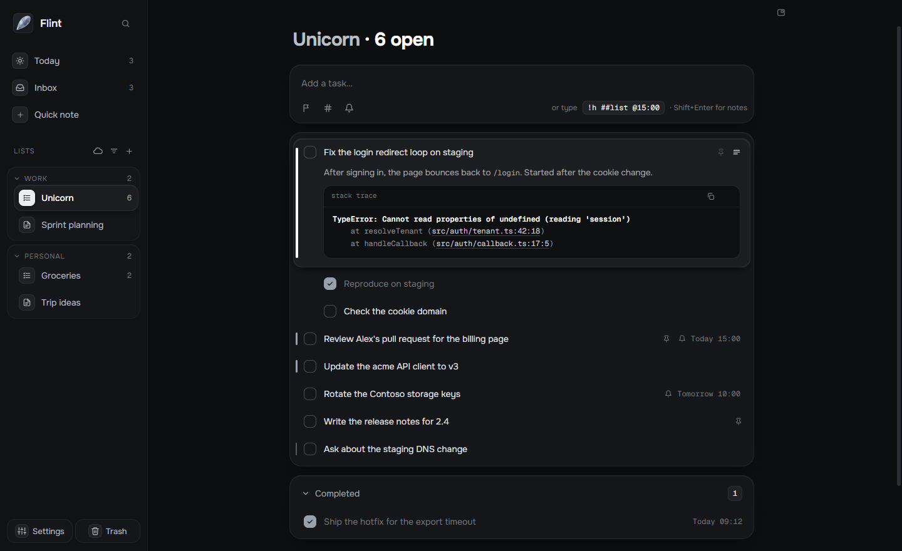
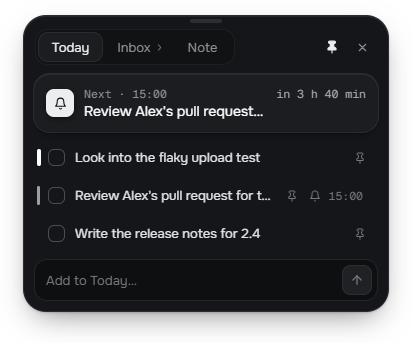

Capture from anywhere
A pre-warmed popup opens over any app, even a full-screen call, with the cursor ready. Select text anywhere and press CtrlShiftX to capture it, code and stack traces included.
Free and open source · Windows
Flint is a keyboard-first notes and task app for developers. Press CtrlShiftSpace from any app, type, press Enter. Back to your call in under three seconds.
Windows 11, 64-bit · MIT license · No account
!h priority · ##list list · @15:00 reminder

Every line is a task: drag it, give it a priority, a reminder, notes and code.
What it does
A pre-warmed popup opens over any app, even a full-screen call, with the cursor ready. Select text anywhere and press CtrlShiftX to capture it, code and stack traces included.
!h ##backend @15:00 sets the priority, the list and a reminder while you
type.
Lists where every line is a task, and notes with a live preview, tables and code blocks.
Pin what matters today. Reminders arrive as Windows notifications with Done and Snooze.
CtrlK reaches every action. Arrows, Space and Enter do the rest.
A small card on top of everything, hidden from screen sharing. CtrlAltSpace

Choose lists and notes to keep in step across your PCs, through a Flint folder in your Google Drive.
Drafts are kept, writes are atomic, deletes go to Trash, and snapshots let you go back.
Hand a task, its notes and subtasks to Claude Code in one step, in the right project folder.
Your files, your machine
Every list is a .md file that opens in any editor. No account, no
telemetry, no Flint server. Flint only contacts GitHub to check for updates, and Google
Drive only if you turn on sync, for exactly what you choose.
---
flint: 1
id: unicorn
mode: tasks
---
- [ ] Fix the login redirect loop [priority:: high] [id:: t1]
- [ ] Review Alex's pull request [reminder:: 2026-03-10T15:00]
- [ ] Rotate the Contoso storage keys [pinned:: true]
## Completed
- [x] Ship the hotfix [completion:: 2026-03-10T09:12]Free for Windows. Updates itself, quietly, when you quit.
Download for WindowsFlint isn't code-signed yet: the first time, Windows may say it protected your PC. Choose More info, then Run anyway.